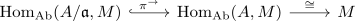

hom out of the quotient ring as torsion submodule
Proposition
Let \(A\) be a ring and $\mathfrak{a} \subseteq A$ an ideal Then for a \(A\)-module $M$
\begin{align*}
\mathrm{Hom}_{\mathrm{Ab}}(A/\mathfrak{a}, M) \cong M[\mathfrak{a}]
\end{align*}
where $M[\mathfrak{a}]$ is the ideal torsion submodule
Proof
Note that a module-homomorphism
\begin{align*}
\varphi: A/\mathfrak{a} \rightarrow M
\end{align*}
is fully determined by $\varphi(1 + \mathfrak{a})$
Here the evaluation is given by
\begin{align*}
\mathrm{Hom}_{\mathrm{Ab}}(A/\mathfrak{a},M) \rightarrow& M \\
\varphi \mapsto& \varphi(1)
\end{align*}
given by precomposition

(cf. precomposition with an epimorphism as injection)
It remains to show that this evaluation restricts to $M[\mathfrak{a}]$. As $\varphi$ is welldefined we conclude that for arbitrary $a \in \mathfrak{a}$ since $1 + \mathfrak{a} = (1 + a) + \mathfrak{a}$
\begin{align*}
\varphi(1 + \mathfrak{a}) =& \varphi(1 + a + \mathfrak{a}) \\
=& \varphi(1 + \mathfrak{a}) + \varphi(a + \mathfrak{a}) \\
=& \varphi(1 + \mathfrak{a}) + \varphi(a \cdot 1 + \mathfrak{a}) \\
=& \varphi(1 + \mathfrak{a}) + a \varphi(1 + \mathfrak{a})
\end{align*}
showing $a \cdot \varphi(1 + \mathfrak{a}) = 0$ or $\varphi(1) \in M[\mathfrak{a}]$